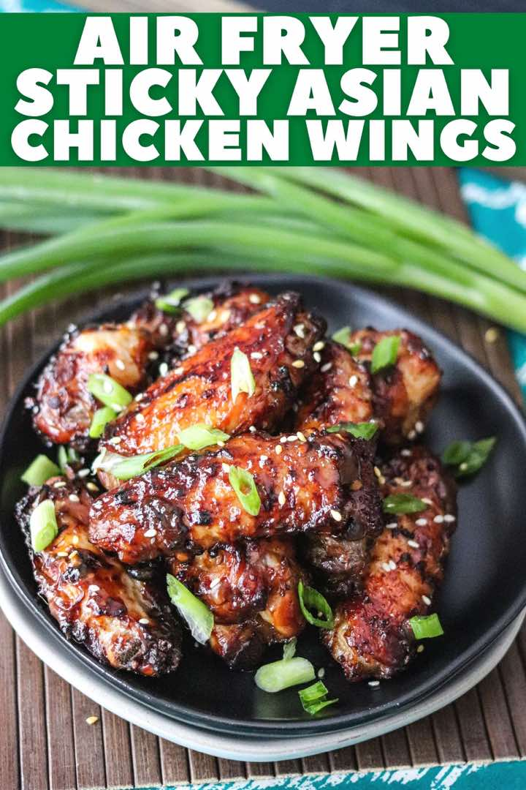

Air Fryer Asian Chicken Wings
Air FryerChicken
Servings4 servings
PrepPT5M
CookPT16M

Ingredients
- 2 lbs chicken wings (drums and flats) ((defrosted if frozen))
- 1 tsp sesame oil
- 1/2 tsp red pepper flakes
- 3 cloves garlic, (minced)
- 1 TBS brown sugar
- 1/3 cup soy sauce
- 1 tablespoon fresh ginger, (minced)
- 1/2 tsp sriracha
- 1 tsp cornstarch
- 3 tablespoons water
- 2 stalks green onions (chopped)
- 1 tsp sesame seeds
Directions
- For the wings:
- Pat the wings completely dry (this will help them get crispy). Using a medium sized bowl, add sesame oil, red pepper flakes, garlic, brown sugar, soy sauce, sriracha, and ginger; mix with a whisk for 30 seconds. Place the wings into the bowl , then toss to completely coat the wings. Alternatively, use a ziplock bag to place the wings into and then toss with the sauce.
- Place the wings, covered, into the fridge and let marinade at least 30 minutes (up to overnight).
- Preheat the Air Fryer to 350 F degrees for 2 minutes. Add the asian chicken wings in a single layer to the air fryer (they should NOT be touching) and reserve the marinade, and cook for 9 minutes at 350 F degrees.
- After the timer goes off, open and carefully flip over the chicken wings. Using the remaining marinade, brush the wings liberally with the sauce. Close the air fryer and change temperature to 400 degrees F, and cook for 7 minutes. When the time is up check the internal temperate of the wings using a digital thermometer- they should be at least 165 degrees F. Remove the chicken wings, and set aside.
- For the glaze:
- Using a small sauce pot on the stove top, add the left over marinade* and heat on HIGH heat. Once it starts boiling, reduce to a simmer. In a small cup mix cornstarch and water. Pour the mixture into the sauce pot, bring back to a quick boil, then turn back down to a simmer and cook 5 minutes; stirring occasionally. The sauce should thicken up quickly.
- Remove from heat and brush the sauce over the wings. Garnish with chopped green onions and sesame seeds! Serve while hot!
Source
https://domesticsuperhero.com/air-fryer-asian-chicken-wings-crispy-sticky/
This page includes Schema.org Recipe structured data for recipe importers.